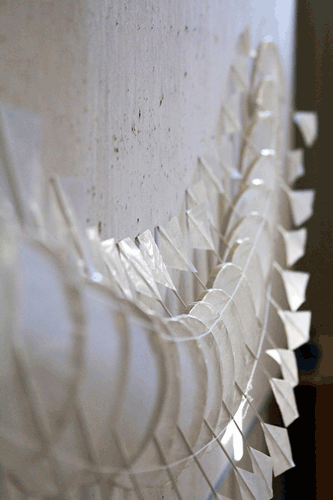
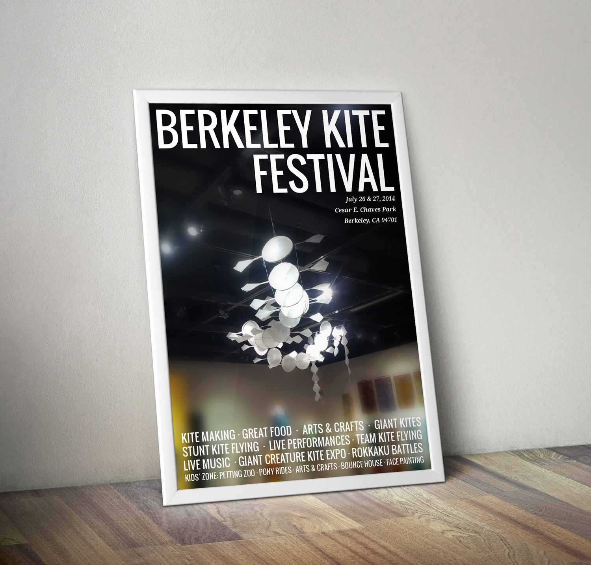
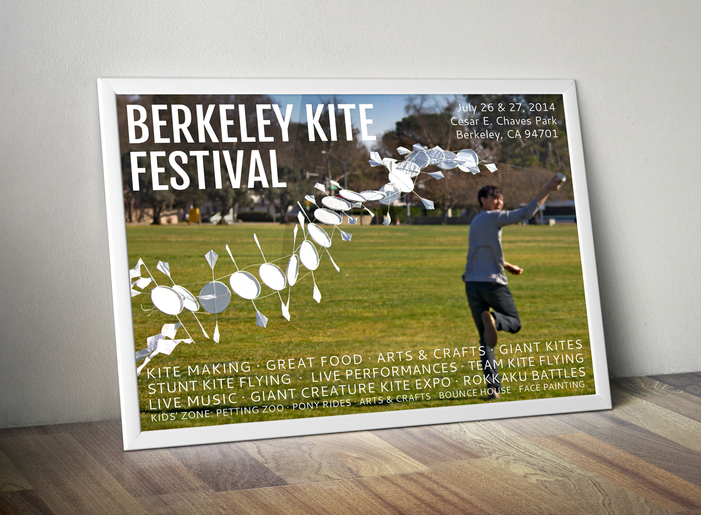

In a collaborative group effort, two other designers and myself built a Chinese-style Dragon Kite in the pursuit of creating a pattern that moved and interacted with the wind. Our kite has 20 sections and employs a unique polygon shape for the wing tips and tails.
The kite was selected for juried exhibition by a panel of faculty for the UC Davis Design Museum (Design by Design, 2013).
Project Dimensions: Approximately 13' x 10" x 30"
Materials:
After the kite was shot in various settings, I composed a series of posters to advertise the Annual Kite Festival in Berkeley.
  